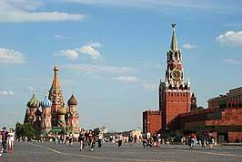
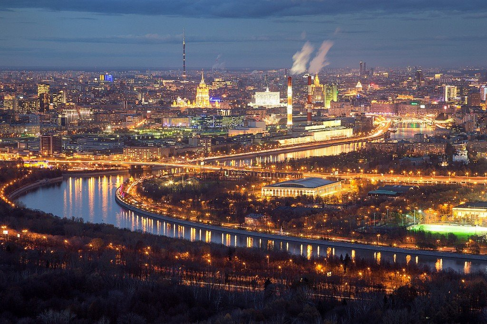

Город Москва
Москва

Москва́ (произношение (инф.)) - столица России, город федерального значения, административный центр Центрального федерального округа и центр Московской области, в состав которой не входит[6]. Крупнейший по численности населения город России и её субъект — 13 097 539[3] человек (2023), самый населённый из городов, полностью расположенных в Европе, занимает 22-е место среди городов мира по численности населения[7]. Центр Московской городской агломерации. Самый крупный город Европы по площади.
Первое письменное упоминание о Москве относится к 1147 году[6]. История города насчитывает, по меньшей мере, 875 лет. Археологические данные свидетельствуют о существовании городского поселения в районе будущего Кремля с XI века[9]. Москва — историческая столица Великого княжества Московского, Русского царства, Российской империи (в 1728—1732 годах[10][11][12][13]), Советской России и СССР. Город-герой. В Москве находятся федеральные органы государственной власти Российской Федерации (за исключением Конституционного суда), посольства иностранных государств, штаб-квартиры большинства крупнейших российских коммерческих организаций и общественных объединений.
Расположена на западе России, на реке Москве в центре Восточно-Европейской равнины, в междуречье Оки и Волги. Как субъект федерации, Москва граничит с Московской и Калужской областями.
Москва — популярный туристический центр России. Кремль, Красная площадь, Новодевичий монастырь и Церковь Вознесения в Коломенском входят в список объектов всемирного наследия ЮНЕСКО[14]. Она является важнейшим транспортным узлом: город обслуживают 6 аэропортов, 10 железнодорожных вокзалов, 3 речных порта (имеется речное сообщение с морями бассейнов Атлантического и Северного Ледовитого океанов). С 1935 года в Москве работает метрополитен. Москва — спортивный центр страны. В 1980 году в Москве прошли XXII летние Олимпийские игры, а в 2018 город стал одним из хозяев чемпионата мира по футболу.
Москва занимает 31 место в рейтинге научно-технологических кластеров мира (Глобальный инновационный индекс, 2022 год).
Этимология

Название города происходит от названия реки[15]. Этимология гидронима Москва точно не установлена[16]. В последнее время широкое распространение среди специалистов получили гипотезы о балтийском[17], славянском[18] происхождении названия реки. В славянской и балтийской версиях исконным значением слова было «жидкий, топкий, сырой, слякотный»[19].
В версии о финно-угорском происхождении выводят объяснение из разных языков: из коми моска — «корова, тёлка», из мерянского маска — «медведь»[20], из прибалтийско-финского муста — «чёрный, тёмный». В данный момент у этой версии очень мало сторонников[21]. Лингвист М. Фасмер назвал неудачными попытками этимологии из финно-угорского[18], В. П. Нерознак признаёт их малообоснованными[22]. Возражения объясняются следующими фактами:
1- Не учитывается древнейшая форма ойконима, зафиксированная в источниках: «Московъ»;
2- Несостоятельность объяснения гидронима «Москва» из языка коми: коми никогда не жили на территории, близкой к течению этой реки[21];
3- Марийское «маска» заимствовано из русского слова «мечка» — «самка медведя» в XIV—XV веках[21];
4- Непоследовательность этимологии из прибалтийско-финского состоит в том, что каждая часть названия объясняется из разных языков, удалённых друг от друга: «муста» — из финского, «-ва» из коми[21].
География и Климат

Москва находится в центре Восточно-Европейской равнины, в междуречье Оки и Волги, на стыке Смоленско-Московской возвышенности (на западе), Москворецко-Окской равнины (на востоке) и Мещёрской низменности (на юго-востоке), недалеко от границы лесной и лесостепной природной зоны, которая подступает к городу с юго-востока по долине реки Москвы. Город располагается на Русской плите, входящей в состав Восточно-Европейской платформы; к северу и северо-востоку от Москвы находится Московская синеклиза — крупнейшая депрессия центральной части Восточно-Европейской платформы. Территория города по состоянию на 1 января 2014 года составляет 2561,5 км²[2], примерно треть этой площади (878,7 км²) находится внутри кольцевой автомагистрали (МКАД)[23].
Москва находится в часовой зоне МСК (московское время). Смещение применяемого времени относительно UTC составляет +3:00[24]. В соответствии с применяемым временем и географической долготой[25] средний солнечный полдень в Москве наступает в 12:30.
Климат
Климат Москвы — умеренно континентальный, с чётко выраженной сезонностью. Зима (период со среднесуточной температурой ниже 0 °C) в среднем длится около 4 месяцев, со второй декады ноября (12 ноября) до второй декады марта (19 марта). Дневная температура устойчиво возвращается к положительным значениям 3 марта. В период календарной зимы могут отмечаться непродолжительные (3—5 дней) периоды сильных морозов (с ночной температурой до −20 °C, редко до −25..−30 °C). При этом в декабре и начале января часты оттепели, когда температура с −5..−10 °C поднимается до 0 °C и выше, иногда достигая значений в +5..+9 °C. По данным метеостанции ВДНХ (за период 1991—2020 годов), самым холодным месяцем года является январь (его средняя температура составляет −6,2 °C[30]). Весенние сезоны по продолжительности варьируются год от года и могут составлять от 1 до 3 месяцев. Иногда практически летние температуры регистрируются в начале апреля, в то же время в конце мая — начале июня случаются возвраты холодов. Лето (период с дневной температурой выше +20 °C и среднесуточной выше +15 °C) длится около 3,5 месяцев, с третьей декады мая (23 мая) до конца августа (31 августа), дневная температура нередко достигает 30-градусной отметки (в среднем 6—8 дней за сезон, в 2010 году — непрерывно 1,5 месяца). 35-градусная отметка за последние 30 лет достигалась 18 раз, из них 16 — в 2010 году. Самым тёплым месяцем является июль (его средняя температура за период 1981—2010 годов составляет +19,2 °C). Осень в Москве затяжная, наступает с началом сентября, заканчивается в середине ноября — начале декабря, когда среднесуточная температура становится устойчиво ниже 0 °C. Нередко температура после начала метеорологической зимы возвращается к положительным значениям, полностью сходит снежный покров.